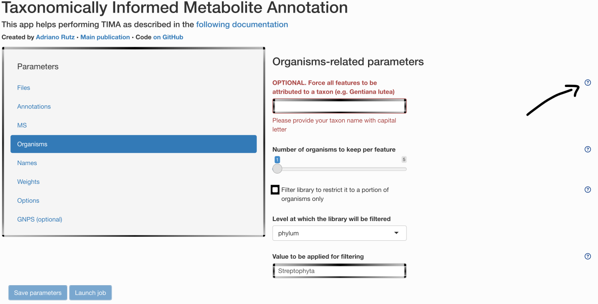
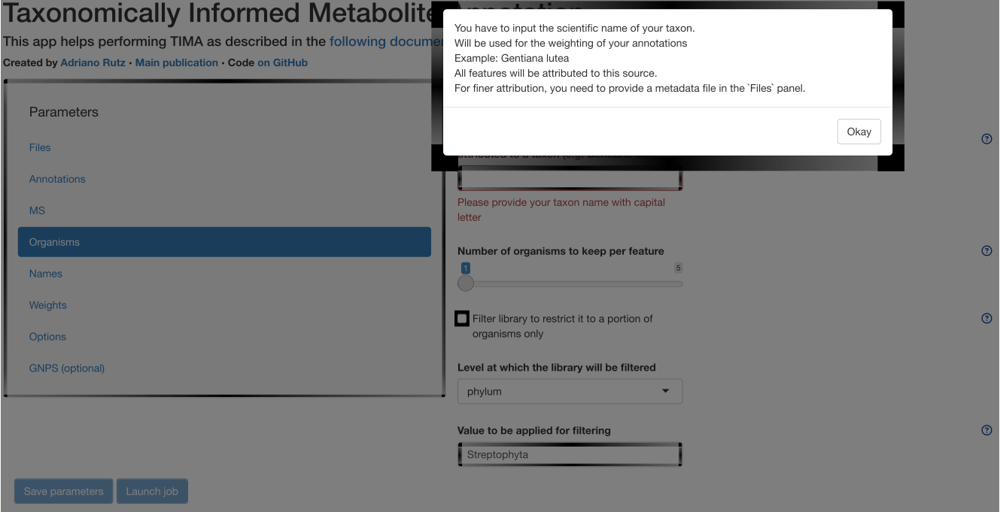

tima::get_example_files()
2026-01-04
This vignette describes…
All steps require parameters. Some default parameters are available and can be accessed in the params/default directory. If you prefer accessing them through the GUI, you can do so. Each parameter contains a small help menu, you can click on, as illustrated below.


For example, if you want to have an output compatible with Cytoscape, with multiple annotations per features:
All parameters will be saved and reported at the end of your analysis.
You should provide your own files in the main menu. For this tutorial, we will use some example files you can get running:
tima::get_example_files()The following paragraph describes the libraries available by default.
As a first step, you need spectral libraries to perform MS2-based annotation.
You can of course use your own experimental spectral library to perform MS2 annotation. We currently support spectral libraries in MSP or MGF format.
To get a small example:
tima::get_example_files("spectral_lib_with_rt")GNPS, MassBank & MERLIN are downloaded and used by default, for more info about them, see https://github.com/Adafede/SpectRalLibRaRies.
In case you want to format your own spectral library to use it for spectral matching, adapt it the same way.
targets::tar_make(
names = tidyselect::matches("lib_spe_exp")
)As the availability of experimental spectra is limited, we can take advantage of in silico generated spectra.
We generated an in silico spectral library of the structures found in Wikidata using CFM4. For more info, see https://doi.org/10.5281/zenodo.5607185. It is made available in both polarities.
targets::tar_make(
names = tidyselect::matches("lib_spe_is_wik")
)targets::tar_make(
names = tidyselect::matches("lib_spe_is_wik_pre")
)You can also complement with the in silico spectra from HMDB (not running by default as quite long):
tima::get_example_files("hmdb_is")This library is optional. As no standard LC method is shared (for now) among laboratories, this library will be heavily laboratory-dependent. It could also be a library of in silico predicted retention times. If you want to prepare you own library, have a look at params/user/prepare_libraries_rt.yaml.
As we developed LOTUS1 with Taxonomically Informed Metabolite Annotation in mind, we provide it here as a starting point for your structure-organism pairs library.
targets::tar_make(
names = tidyselect::matches("lib_sop_lot$")
)targets::tar_make(
names = tidyselect::matches("lib_sop_lot_pre")
)The process to download LOTUS looks like this:
As you can see, the targets seem outdated. In reality, we force it to search if a new version of LOTUS exists each time. If a newer version exists, it will fetch it and re-run needed steps accordingly.
By default, we also complement LOTUS pairs with the ones coming from BiGG.
targets::tar_make(
names = tidyselect::matches("lib_sop_big_pre")
)And the ones from ECMDB.
targets::tar_make(
names = tidyselect::matches("lib_sop_ecm_pre")
)And we do the same with the ones coming from HMDB.
targets::tar_make(
names = tidyselect::matches("lib_sop_hmd_pre")
)For these first steps, you do not need to change any parameters as they are implemented by default.
As we want our tool to be flexible, you can also add your own library to LOTUS. You just need to format it in order to be compatible. As example, we prepared some ways too format closed, in house libraries. If you need help formatting your library or would like to share it with us for it to be implemented, feel free to contact us. Before running the corresponding code, do not forget to modify params/user/prepare_libraries_sop_closed.yaml.
Once all sub-libraries are ready, they are then merged in a single file that will be used for the next steps.
targets::tar_make(
names = tidyselect::matches("lib_sop_mer")
)We now recommend you to read the next vignette.
For more informations, see https://doi.org/10.7554/eLife.70780↩︎